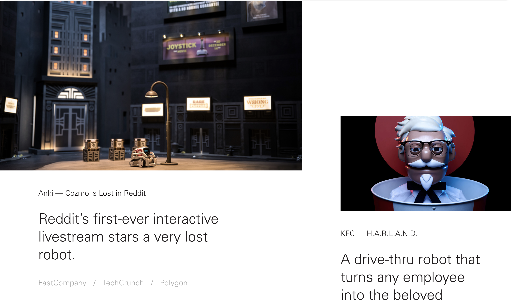
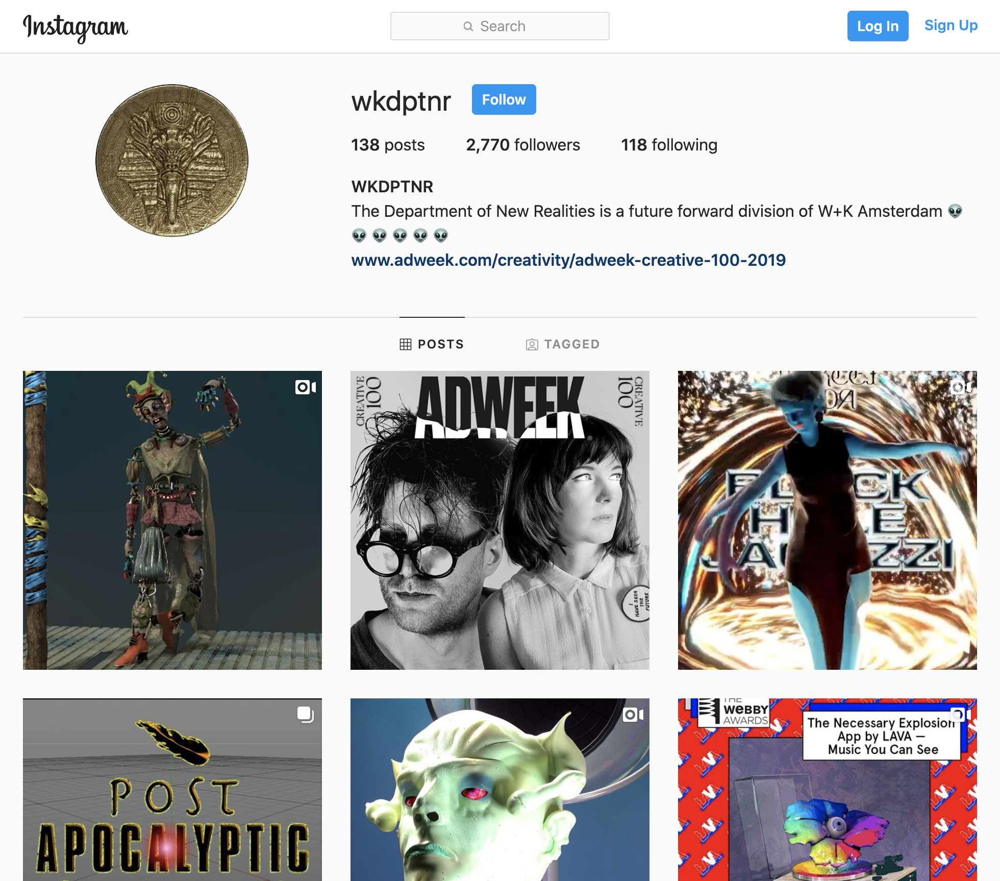
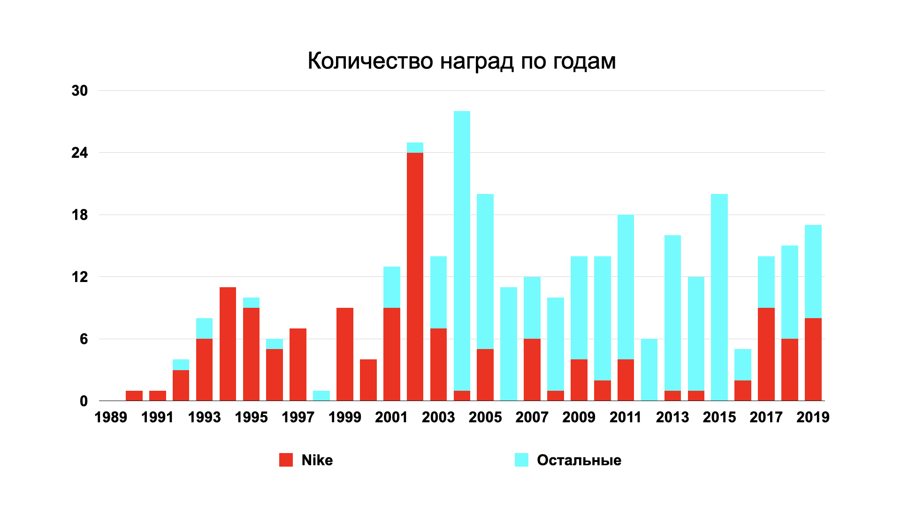
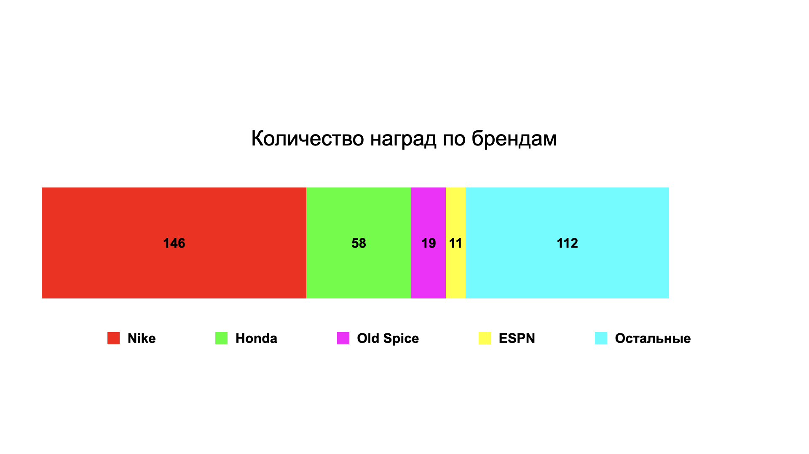
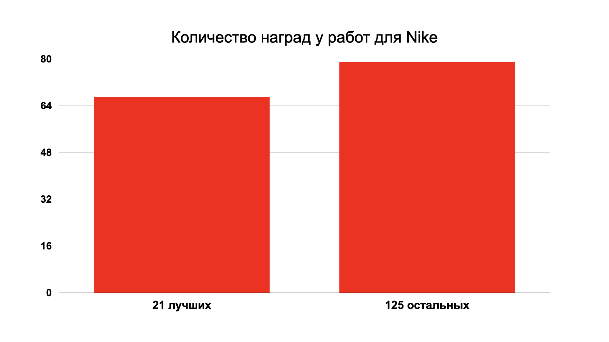
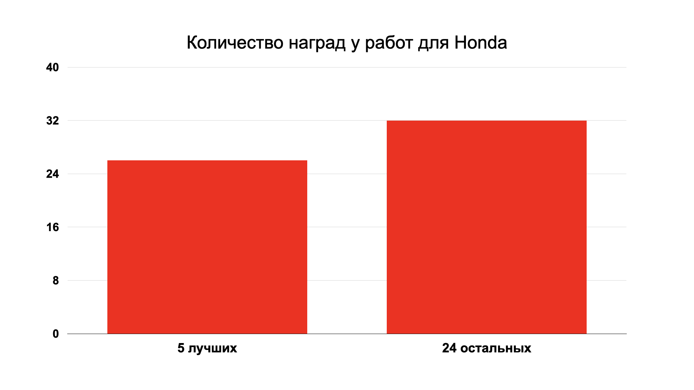

короче говоря
- Wieden+Kennedy — единственное независимое агентство, которое соревнуется c крупными сетками на равных.
- на удивление Wieden+Kennedy делают хороший креатив даже для глобальных брендов: KFC, Coca-Cola и Ford.
- Wieden+Kennedy работает с Nike практически с первого дня их основания, и все работы, которые вы видели, скорее всего сделали именно они.
во-первых, это классные проекты
было бы странно рассказать об агентстве, но не показать работы.
Body Wash
сейчас все мечтают работать с Old Spice. но когда с Old Spice начали работать W+K, было совсем наоборот. единственная причина, по которой Old Spice в принципе разрешили W+K попробовать что-то новое, заключалась в том, что они сами считали, что терять им уже нечего 1. так появился этот шедевр:
Real 5G
Old Spice Hair
SHottasoco
посмотрите клип, а потом посмотрите кейс. за этой кислотной визуализацией стоит конкретное бизнес обоснование.
Honda Cog
как W+K стали такими, какими стали
на всякий случай уточню, что Wieden+Kennedy основали два человека — Ден Вайден (Dan Wieden) и Девид Кеннеди (David Kennedy). они познакомились в McCann-Erickson. их поставили в пару на тогда еще никому неизвестный бренд кроссовок Nike. через два года они открыли свое агентство, и увели Nike за собой 2.
не лишним будет сказать, что на тот момент отец Дена Вайдена Дюк (Duke) занимал пост вице-президента Portland General Electric, а до этого возглавлял одно из крупнейших агентств в штате — Gerber Advertising. Ден позвал его в партнеры, но тот отказался.
Nike были основным клиентом W+K до середины 90-х, но новые клиенты появлялись сами по себе: Microsoft, ESPN, Coca-Cola и Honda.
несколько знаменательных дат:
- в 1992 от управления агентством отошел Девид Кеннеди.
- в 1998 Nike поделил свой аккаунт между Wieden+Kennedy и Goodby&Silverstein. Но на следующий год Nike вернулись обратно.
- в 2015 от управления Wieden+Kennedy отошел Ден Вайден.
культура
в самом начале существования W+K никто не хотел переезжать ради них в Орегон. им приходилось нанимать либо студентов, которых никуда не брали без опыта, либо людей, которых никуда не брали с их опытом. поэтому в W+K собралась нетипичная тусовка.
Мы пытались понять, что такое реклама, а Nike пытались понять, зачем мы им нужны
после первых успешных работ сетевые агентства начали переманивать креативщиков. W+K не могли предложить конкурентную зарплату, поэтому решили создать уникальную культуру. если под уникальной культурой Ден подразумевает (нет) награды, портфолио и нетворк, то я с ним согласен.
в то же самое время W+K говорят, что не переживают за награды. на входе в офис вместо львов и карандашей они вешают портеры сотрудников. как будто бы самое главное для них — это люди. при этом награды никто не отменял, и каждый год W+K платят сотни тысяч долларов за фестивальные подачи.
еще одна особенность W+K — это плоская структура иерархии. когда Cheif Creative Officer BBH New York перешел в Wieden+Kennedy, он перешел на должность Creative Director 3.
подразделения внутри Wieden+Kennedy
The Lodge

в 2007 году Nike отдали диджитальные проекты другому агентству, потому что W+K не умели делать диджитал. в ответ на это W+K создали студию диджитальных проектов The Lodge.
двое основателей (Neil Ashra, Paulo Ribeiro) ушли из W+K в 2018 году 4, чтобы сделать свое агентство Two Things. сейчас The Lodge интегрирован в W+K.
The Department of New Realities

подразделение Wieden+Kennedy Amsterdam, которое занималось дизайном в VR и AR. сейчас оно закрыто. проекты можно посмотреть на Vimeo и в Инстаграме. DPRTNR делали Anita Fontaine и Geoffrey Lillemon, на Ютубе сохранилось их выступление:
награды Wieden+Kennedy
гиковский раздел с циферками и графиками. данные взяты из архива D&AD.
W+K занимает четвертое место в рейтинге компаний, в которых хотят работать креативщики 5. сразу после Google, Nike и Apple. одна из причин, почему так — это награды. очень много наград.
Nike играет большое значение для Wieden+Kennedy, но с начала 00-х оно постепенно снижается

бóльшую часть наград приносит меньшее количество клиентов

бóльшую часть наград приносит меньшее количество работ
21 работа для Nike собрали почти столько же наград, сколько и 125 остальных.


-
How A Top Creative Director Turned The Jobs No One Wanted Into A Career Anyone Would Envy — Fast Company ↩︎
-
Wieden+Kennedy — Encyclopedia ↩︎
-
BBH New York CCO Gerard Caputo Is Leaving for Wieden + Kennedy — Adweek ↩︎
-
Wieden+Kennedy Is Losing the Founder and the Managing Director of Its Tech Division — Adweek ↩︎
-
The Top 50 Companies Working Not Working Creatives Want to Work for in 2020 — Working Not Working ↩︎